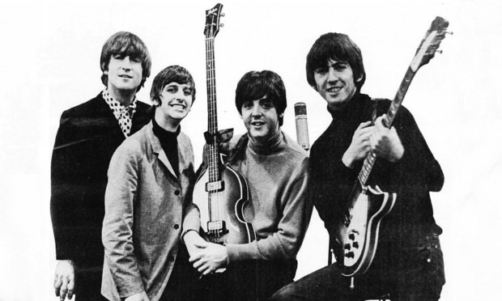

Home
Discography
Bio
Beatles

The Beatles were an English rock band formed in Liverpool in 1960. With a line-up comprising John Lennon, Paul
McCartney,
George Harrison and Ringo Starr, they are often regarded as the most influential band of all time.[1] The group were
integral
to the evolution of pop music into an art form and to the development of the counterculture of the 1960s.[2] Their
sound, rooted
in skiffle, beat and 1950s rock and roll, incorporated elements of classical music and traditional pop in innovative
ways. They
also pioneered recording techniques and explored music styles ranging from ballads and Indian music to psychedelia
and hard rock.
As they continued to draw influences from a variety of cultural sources, their musical and lyrical sophistication
grew, and they
came to be seen as embodying the era's socio-cultural movements.
Discography
| Title |
Release |
Certification |
| Please Please Me |
Released: 22 March 1963 |
BPI: Gold[10]
ARIA: Gold[11]
MC: Gold[12]
RIAA: Platinum[13] |
| With the Beatles[ |
Released: 22 November 1963
Label: Parlophone (UK), Capitol (CAN), Odeon (FRA) |
BPI: Gold[10]
ARIA: Gold[11]
BVMI: Gold[15]
MC: Gold[12]
RIAA: Gold[13] |
| Introducing... The Beatles |
Released: 10 January 1964
Label: Vee-Jay (US |
RIAA: Platinum |
Bio
-
John Lennon – vocals, rhythm and lead guitar, keyboards, harmonica, bass guitar

-
Paul McCartney – vocals, bass guitar, rhythm and lead guitar, keyboards, drums

-
George Harrison – lead and rhythm guitar, vocals, sitar, keyboards, bass guitar

-
Ringo Starr – drums, percussion, vocals